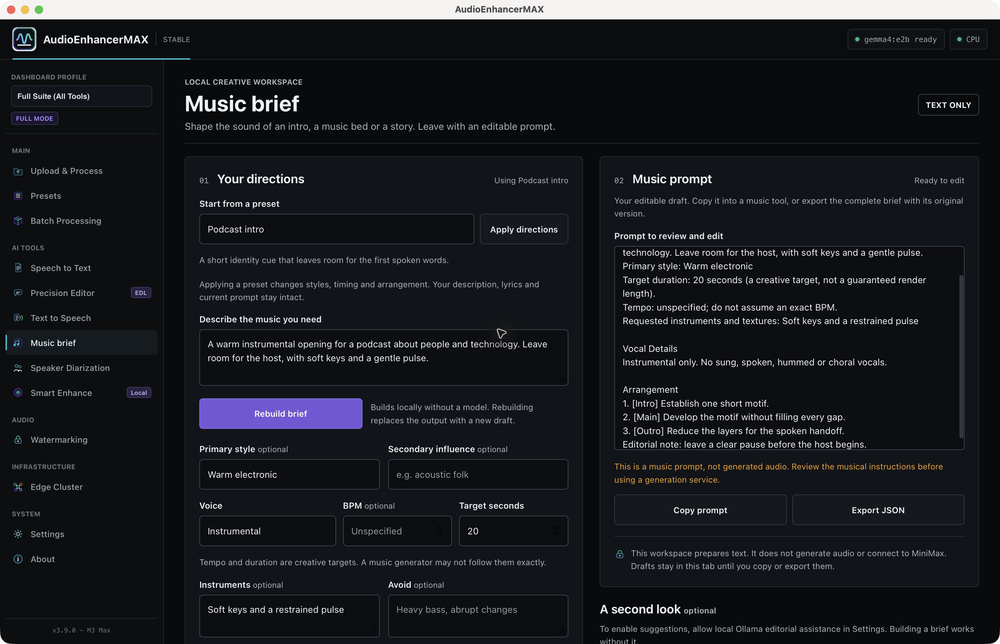

Press materials · Stable 3.9.0 · Build 3.9.2
Local audio. Reviewable decisions. A new Music brief workspace.
AudioEnhancerMAX is a free, MIT-licensed application for Apple Silicon Macs. Stable 3.9.0 adds editable music prompts to its local audio cleanup, transcription and speech-editing workflow.
Materials for reporting and hands-on review
English and Italian announcements, reviewer steps, screenshots of stable 3.9.0, the project logo and a developer-created audio sample.
Download press kit EN / ITInstall the stable app · Release notes and checksums · Verification and limits

What is new
Music brief offers six original presets, editable styles and arrangement directions, a separate lyrics field and JSON export that retains source inputs and the edited prompt. The core builder works without a model or network. Optional Ollama suggestions require an installed local model and permission; they remain separate until reviewed and appended.
This assistant prepares text, not generated music. It does not call MiniMax. Drafts remain in the current session, so copy or export before closing; JSON re-import is not included.
Release facts
| Version | 3.9.0 stable, build 3.9.2 |
|---|---|
| Platform | Apple Silicon (arm64), macOS 13 or later |
| Price / license | Free direct download; MIT-licensed source; no account for the core workflow |
| Distribution | Developer ID signed, Apple notarized and stapled direct DMG. No App Store approval is implied. |
| Data and upgrade | Existing stable data is retained. Experimental 1 stays separate; previous stable 3.8.3 remains available. |
| Models and network | Transcription may download a model on first use, then runs locally. Ollama and other optional engines need separate components. Optional Edge TTS sends text to Microsoft. |
A practical first look
- Install and complete the local readiness screen.
- Open Music brief, apply Podcast intro, write a short description, build and edit the prompt, then export JSON.
- Import a recording you own. Apply conservative cleanup, compare original and output and export WAV, MP3 or FLAC.
- Review the processing report and export a Project Capsule. Try transcription once a model is available and review proposed speech edits before rendering.
Video tour
Watch the 4:33 workflow tour on YouTube. English narration with English and Italian subtitles. The tour was recorded with Experimental 1 and uses synthetic narration and edited application captures. The Music brief workflow is now in stable 3.9.0; the version badge in the video remains Experimental.
What the evidence does and does not show
Automated regressions, packaged workflow checks, signature verification and dependency checks are documented with the release. They do not establish every supported macOS configuration, first-time model acquisition, subjective listening quality or transcription accuracy. Loudness guidance and hashes support review, not certification.
Materiali stampa in italiano
AudioEnhancerMAX 3.9.0 porta Music brief nella versione stabile dell’app gratuita per Mac: sei preset, prompt modificabili, lyrics separate ed esportazione JSON. Il flusso si affianca a pulizia audio locale, trascrizione e modifiche del parlato da rivedere.
La costruzione di base non richiede modelli o rete. I suggerimenti opzionali di Ollama richiedono consenso e revisione. Music brief prepara testi e non genera musica. Le bozze vanno copiate o esportate prima di chiudere la sessione.
Il kit comprende comunicato italiano, guida alla prova, schermate della stabile, logo e campione audio dello sviluppatore. Il video esistente ha sottotitoli italiani ed è stato registrato con la precedente Experimental 1.
Attribution and feedback
Application and screenshots: AudioEnhancerMAX / Fabrizio Degni. Assets are supplied for reporting on the project; they do not imply independent review or endorsement. Report reproducible issues using a synthetic or redacted example. Developer profile.